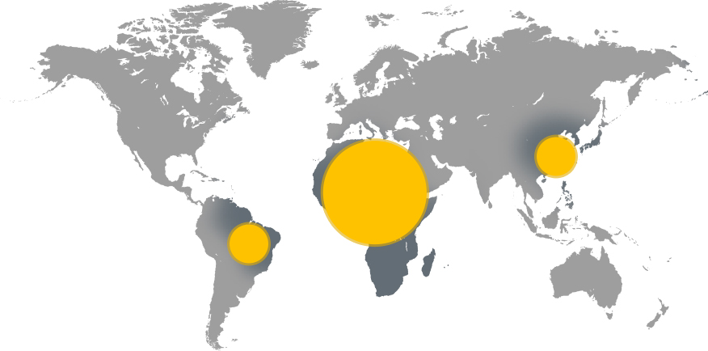
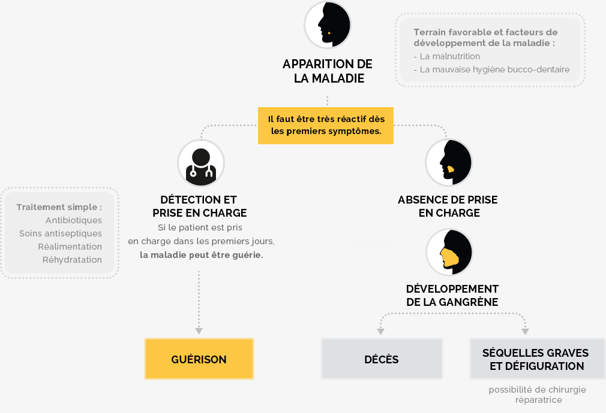

Le Noma
une maladie difficile
à regarder en face...
...mais simple à éviter, avec peu de moyens...
10€ Pour sauver une vie
Le Noma
Le Noma tue les enfants après leur avoir dévoré le visage.
Le Noma, également appelé maladie de la pauvreté a été éradiqué en Europe à la fin du 19ème siècle.
Maladie bactérienne, il affecte d’abord la bouche puis ronge le visage des enfants.
En l’absence de soins immédiats, il conduit souvent à une mort atroce.
En savoir plus140 000 Cas de Noma par an
2 à 6 ans Âge moyen des victimes
80 % De Mortalité
L'afrique
Est le continent le plus touché
Comment se développe la maladie ?

Facile à soigner, le Noma tue
parce qu'il n'est pas connu.
Faire reculer le Noma est un enjeu
de prévention et d'accès aux soins
L'association
et notre action
Pour lutter contre le Noma nous avons construit un programme autour de 3 objectifs :
Apprendre aux populations à reconnaître le Noma et permettre une prise en charge médicale rapide des enfants malades
Faire évoluer les comportements en terme de nutrition et d'hygiène bucco-dentaire
Renforcer la capacité des acteurs de santé à soigner le Noma par des traitements simples
1457acteurs de santé formés
180 000enfants de 2 à 6 ans dans la zone ciblée
Actualité
Grâce à vos dons, nous pouvons agir...
Un don Pour sauver des enfants
Faire un don